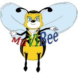

 |
MuViBeeMusic, Video & Book LibraryVersion 1.0 |
|---|
This program was developed during the lecture Programmieren 3
on the Hochschule für Technik und Wirtschaft des Saarlandes.
Used libraries:
HtmlCleaner 2.0 (distributed under BSD License) http://htmlcleaner.sourceforge.net/license.php
HyperSQL (based on BSD License) http://hsqldb.org/web/hsqlLicense.html
Icon licenses:
All used Icons are free for non commercial use
GPL; Icons Dark Glass By: Alessandro Rei
Creative Commons: by Limpa (Björn Lindberg) | CV Icons
Flag icons By: IconDrawer Free for commercial use (http://www.icondrawer.com)
CD Icon 2006-2007 Everaldo Coelho. under LGPL (http://www.everaldo.com/)
Cover licenses:
All used Covers import from Amazon.com and Bol.de